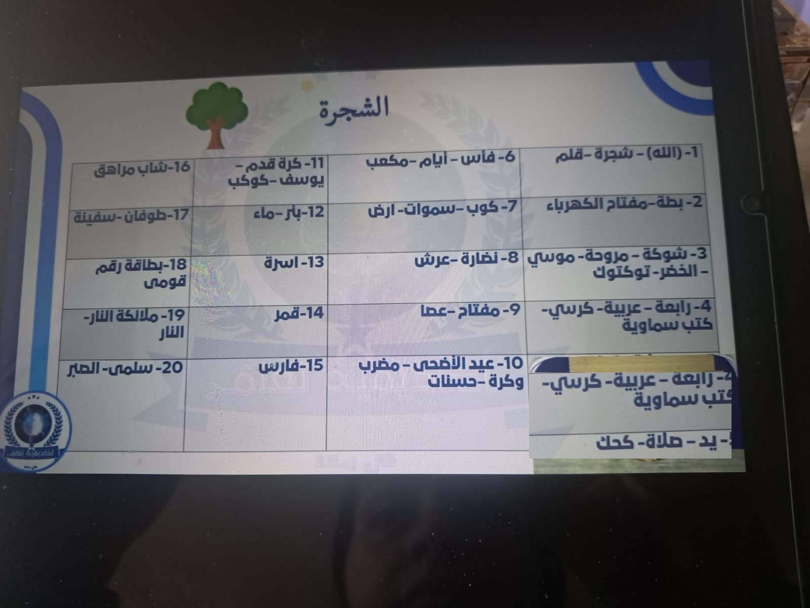
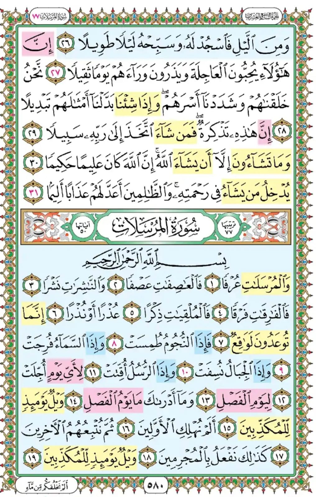
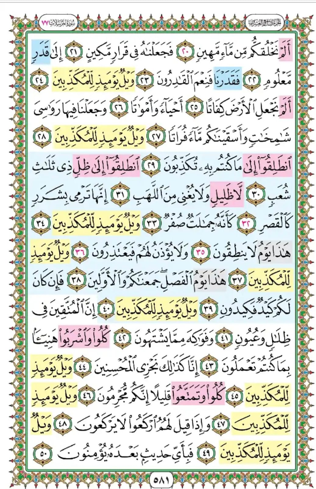

مفهوم طريقة الشجرة والحفظ بالبدائل 🌳🧠
تحويل الأرقام والحروف المجردة إلى صور حسية مجسمة
الأرقام (1، 2، 3...) والحروف مجردة بطبيعتها، والصور الذهنية لها في الدماغ ضعيفة جداً وسريعة التلاشي. إذا حاولت حفظ أن الآية رقم 3 تتحدث عن كذا والآية 4 عن كذا، ستنسى الترتيب أو يتداخل في ذهنك سريعاً لغياب الرابط البصري الحسي.
استبدال كل رقم بـ صورة ذهنية ثابتة ورمز مادي قوي (مثل ربط الرقم 1 بالقلم أو الشجرة، والرقم 2 بالبطة). هذا البديل يُشكل «وتداً ذهparamياً» يُعلق عليه عقلُك المعنى القرآني أو المعلومة، فلا تنفلت أبداً من الذاكرة طويلة المدى.
🎯 التدريب التمهيدي العملي: حفظ 5 كلمات بالبدائل الذهنية
تجربة مباشرةلنفترض أن لديك قائمة بـ 5 أشياء تود حفظها بترتيبها الدقيق: (1. باب - 2. شباك - 3. مكتب - 4. لابتوب - 5. كاميرا). كيف نربطها ببدائل الأرقام لنستحضرها فوراً؟
قلم عملاق ينغرس في قفل الباب ويفتحه
بطة صفراء تطل من الشباك وتصيح
شوكة ثلاثية كبيرة مغروسة في سطح المكتب
سيارة صغيرة تسير فوق لوحة مفاتيح اللابتوب
يد تضغط زر العدسة لالتقاط صورة تذكارية
جدول شجرة البدائل الذهنية من 1 إلى 20 📊🌳
المرجع البصري الموحد للبدائل والرموز المعتمدة

| الرقم | البديل الذهني الرئيسي | الرموز والبدائل المرادفة | سبب الرابط أو الصورة المساعدة |
|---|---|---|---|
| 1 | شجرة 🌳 / قلم ✏️ | (الله) - الواحد الأحد | القلم رأسي مستقيم كالرقم 1، والشجرة تنمو عمودياً كجذع واحد |
| 2 | بطة 🦆 | مفتاح الكهرباء (تك تك) | انحناءة رقبة البطة تشبه الرقم 2 تماماً، ومفتاح الكهرباء ذو طرفين |
| 3 | شوكة 🍴 / مروحة | موسى - الخضر - توكتوك 🛺 | الشوكة ذات ثلاثة أسنان، ريش المروحة 3، والتوكتوك بـ 3 عجلات |
| 4 | عربية 🚗 / رابعة | كرسي 🪑 - كتب سماوية | السيارة لها 4 عجلات، والكرسي 4 أرجل، والكتب السماوية المشهورة 4 |
| 5 | يد ✋ | صلاة (الصلوات الخمس) 🕌 - كحك 🍩 | اليد تحتوي على 5 أصابع، وأركان الإسلام 5، والصلوات المفروضة 5 |
| 6 | فأس 🪓 | أيام الخلق ⏳ - مكعب 🎲 | شكل الفأس الحاد، وخلق السماوات والأرض في ستة أيام، والمكعب بـ 6 أوجه |
| 7 | كوب 🥛 / سموات 🌌 | أرض (سبع أرضين) 🌍 | سبع سموات طباقاً، وشكل الكوب المفتوح لأعلى كعلامة 7 |
| 8 | نظارة 👓 | عرش (ويحمل عرش ربك 8) 👑 | إطارا النظارة يشبهان الرقم 8 بالإنجليزية أو العربية، وحملة العرش ثمانية |
| 9 | عصا 🦯 / مفتاح 🗝️ | آيات موسى التسع ⚡ | عصا موسى المنحنية كشكل الرقم 9، وآيات موسى التسع في بني إسرائيل |
| 10 | عيد الأضحى 🐑 | مضرب وكرة 🏏 - حسنات (الحسنة بعشر) | يوم النحر في العاشر من ذي الحجة، مضرب (1) بجانبه كرة (0) |
| 11 | كرة قدم ⚽ / كوكب 🪐 | يوسف عليه السلام (أحد عشر كوكباً) | فريق كرة القدم مكون من 11 لاعباً، ورؤيا سيدنا يوسف أحد عشر كوكباً |
| 12 | بئر 🪣 / ماء 💧 | عيون موسى (فانفجرت منه اثنتا عشرة عيناً) | عيون الماء الاثنتا عشرة المنفجرة من حجر موسى عليه السلام |
| 13 | أسرة 👨👩👧👦 | بيت متماسك - ترابط عائلي | رقم يعبر عن الدفء الأسري وتجمع أفراد العائلة حول المائدة |
| 14 | قمر بدر 🌕 | ليلة أربعة عشر - نور ساطع | القمر يكتمل بدراً تاماً في الليلة الرابعة عشرة من الشهر الهجري |
| 15 | فارس 🏇 | شجاعة - درع وسيف ⚔️ | سن الفتوة والفروسية والانطلاق على صهوة الجواد |
| 16 | شاب مراهق 🧑🎓 | مرحلة النضج والدراسة 🎒 | سن السادسة عشرة وبدايات اكتمال مرحلة الشباب والمراهقة |
| 17 | طوفان 🌊 / سفينة ⛵ | نوح عليه السلام - أمواج عاتية | أمواج الطوفان وسفينة النجاة التي تشق عباب الماء الهادر |
| 18 | بطاقة رقم قومي 🪪 | سن الرشد القانوني - هوية رسمية | بلوغ سن 18 عاماً واستخراج بطاقة الهوية الوطنية وبلوغ سن الأهلية |
| 19 | ملائكة النار 🔥 | سقر (عليها تسعة عشر) | خزنة جهنم المذكورون نصاً في القرآن: ﴿عَلَيْهَا تِسْعَةَ عَشَرَ﴾ |
| 20 | سلمى 👧 / الصبار 🌵 | صمود - خضار دائم | رمزية نبات الصبار الصبور القوي وشخصية سلمى الحيوية |
التطبيق القرآني العملي: حل تكرارات سورة المرسلات 📖✨
تثبيت 10 مواضع لآية ﴿وَيْلٌ يَوْمَئِذٍ لِّلْمُكَذِّبِينَ﴾ ببدائل الشجرة


🧠 لماذا تُمثل سورة المرسلات التحدي الأكبر للحُفاظ؟
تتكرر آية ﴿وَيْلٌ يَوْمَئِذٍ لِّلْمُكَذِّبِينَ﴾ في سورة المرسلات 10 مرات كاملة. عند التسميع، يقع الحافظ في حيرة وتلعثم: «ما هي الآية التي تأتي بعد الويل الأولى؟ وماذا بعد الثانية؟ وماذا بعد الرابعة؟».
هنا نستخدم بدائل الأرقام من 1 إلى 10 لنربط بداية المقطع اللاحق برمز الشجرة المقابل، فينساب الحفظ كالشلال دون توقف!
﴿أَلَمْ نُهْلِكِ الْأَوَّلِينَ﴾
الرابط: كلمة «الْأَوَّلِينَ» تعني رقم (1)، فنربطها فوراً ببديل الرقم 1 (الأول - القلم المستقيم).
﴿أَلَمْ نَخْلُقكُّم مِّن مَّاءٍ مَّهِينٍ﴾
الرابط: «مَّاءٍ مَّهِينٍ» ماء تسبح فيه البطة الصفراء (رمز الرقم 2)، فتتذكر الماء فوراً!
﴿أَلَمْ نَجْعَلِ الْأَرْضَ كِفَاتًا﴾
الرابط: «الْأَرْضَ» تحفرها شوكة ثلاثية كأسنان المحراث لتجهيز التربة للزرع.
﴿انطَلِقُوا إِلَىٰ مَا كُنتُم بِهِ تُكَذِّبُونَ﴾
الرابط: «انطَلِقُوا» الانطلاق السريع يتم بسيارة (عربية) ذات عجلات أربع تدوس البنزين!
﴿هَٰذَا يَوْمُ لَا يَنطِقُونَ﴾
الرابط: «لَا يَنطِقُونَ» تضع يدك (بأصابعها الخمسة) على الفم كإشارة صمت ومنع من الكلام.
﴿هَٰذَا يَوْمُ الْفَصْلِ ۖ جَمَعْنَاكُمْ وَالْأَوَّلِينَ﴾
الرابط: «يَوْمُ الْفَصْلِ» الفأس الحاد يفصل الخشب أو يفصل بين الأطراف بحسم وقوة.
﴿إِنَّ الْمُتَّقِينَ فِي ظِلَالٍ وَعُيُونٍ﴾
الرابط: «وَعُيُونٍ» ماء العيون العذب يُملأ في أكواب للشرب في ظلال الجنات السبع.
﴿كُلُوا وَتَمَتَّعُوا قَلِيلًا إِنَّكُم مُّجْرِمُونَ﴾
الرابط: «إِنَّكُم مُّجْرِمُونَ» تنظر بالنظارة فترى المجرمين يأكلون ويتمتعون قليلاً قبل الحساب.
﴿وَإِذَا قِيلَ لَهُمُ ارْكَعُوا لَا يَرْكَعُونَ﴾
الرابط: «ارْكَعُوا» العصا المنحنية تمثل انحناء الركوع، والشيخ يتكئ على عصاه عند الركوع.
﴿فَبِأَيِّ حَدِيثٍ بَعْدَهُ يُؤْمِنُونَ﴾
الرابط: ختام كامل ومضاعفة الحسنات بعشر أمثالها، فبأي حديث يؤمنون بعد كتاب الله؟
لعبة تحدي استحضار بدائل الشجرة الذكي
اختبر سرعة ذاكرتك في إطلاق الرمز أو الرقم المعادل فوراً
اختبار الفهم الذاتي للمحاضرة الثانية عشرة 📝
5 أسئلة لاختبار استيعابك لطريقة الشجرة وتطبيقها على سورة المرسلات
1️⃣ متى نلجأ إلى استخدام «طريقة الشجرة» في حفظ القرآن الكريم؟
2️⃣ ما هو البديل الذهني المعتمد للرقم (2) وللرقم (4) في شجرة البدائل؟
3️⃣ في سورة المرسلات، كم مرة تكررت آية ﴿وَيْلٌ يَوْمَئِذٍ لِّلْمُكَذِّبِينَ﴾؟
4️⃣ ما هي الآية التي تلي الموضع الثاني لـ ﴿وَيْلٌ يَوْمَئِذٍ لِّلْمُكَذِّبِينَ﴾ وكيف ربطناها ببديل الرقم 2؟
5️⃣ ما هو البديل الذهني للرقم (19) في شجرة البدائل، وما أصله القرآني؟
مبارك! لقد أتقنت طريقة الشجرة وبدائلها الذهنية بنسبة 100%
أصبح عقلك الآن مجهزاً بأوتاد بصرية متينة لتثبيت أي متشابه أو تكرار قرآني دون أدنى ارتباك!
الواجب العملي الشامل للمحاضرة الثانية عشرة 📝🔥
التطبيق العملي المباشر وحفظ قاموس البدائل الذهنية
تثبيت الرموز الأساسية (1 قلم/شجرة، 2 بطة، 3 شوكة، 4 عربية، 5 يد، ... إلى 20 صبار) حتى تستحضر أي رمز خلال نصف ثانية.
تسميع مواضع ﴿وَيْلٌ يَوْمَئِذٍ لِّلْمُكَذِّبِينَ﴾ العشرة وما يتلو كلاً منها مستعيناً بروابط الشجرة من 1 إلى 10 دون النظر في المصحف.
شغّل المؤقت واكتب أو سَمّع البدائل من 1 إلى 20، وسجّل الزمن المستغرق لتحقيق الاستحضار الآلي اللحظي.
مع طريقة الشجرة.. انتهى عصر النسيان والارتباك في المتشابهات!
كل رمز تبنيه في خيالك هو أصل ثابت وفرع باسق يثمر حفظاً راسخاً لا يتزعزع أبداً بإذن الله.